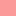
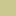

<!DOCTYPE html>
<html lang="en">
  <head>
    <meta charset="utf-8" />
    <meta http-equiv="X-UA-Compatible" content="IE=edge" />
    <meta
      name="viewport"
      content="initial-scale=1,user-scalable=no,maximum-scale=1,width=device-width"
    />
    <meta name="mobile-web-app-capable" content="yes" />
    <meta name="apple-mobile-web-app-capable" content="yes" />
    <link rel="stylesheet" href="css/leaflet.css" />
    <link rel="stylesheet" href="css/qgis2web.css" />
    <link rel="stylesheet" href="css/fontawesome-all.min.css" />
    <style>
      html,
      body,
      #map {
        width: 100%;
        height: 100%;
        padding: 0;
        margin: 0;
      }
    </style>
    <title></title>
  </head>
  <body>
    <div id="map"></div>
    <script src="js/qgis2web_expressions.js"></script>
    <script src="js/leaflet.js"></script>
    <script src="js/leaflet.rotatedMarker.js"></script>
    <script src="js/leaflet.pattern.js"></script>
    <script src="js/leaflet-hash.js"></script>
    <script src="js/Autolinker.min.js"></script>
    <script src="js/rbush.min.js"></script>
    <script src="js/labelgun.min.js"></script>
    <script src="js/labels.js"></script>
    <script src="data/Erdwrmepotenzial_1.js"></script>
    <script>
      var map = L.map("map", {
        zoomControl: true,
        maxZoom: 20,
        minZoom: 10,
      }).fitBounds([
        [48.10015869767472, 16.171450310775718],
        [48.340134261178335, 16.588248576518467],
      ]).setView([48.175199, 16.403278],17);
      var hash = new L.Hash(map);
      map.attributionControl.setPrefix(
        '<a href="https://github.com/tomchadwin/qgis2web" target="_blank">qgis2web</a> &middot; <a href="https://leafletjs.com" title="A JS library for interactive maps">Leaflet</a> &middot; <a href="https://qgis.org">QGIS</a>'
      );
      var autolinker = new Autolinker({
        truncate: { length: 30, location: "smart" },
      });
      var bounds_group = new L.featureGroup([]);
      function setBounds() {}
      map.createPane("pane_OSMStandard_0");
      map.getPane("pane_OSMStandard_0").style.zIndex = 400;
      var layer_OSMStandard_0 = L.tileLayer(
        "http://tile.openstreetmap.org/{z}/{x}/{y}.png",
        {
          pane: "pane_OSMStandard_0",
          opacity: 1.0,
          attribution:
            '<a href="https://www.openstreetmap.org/copyright">© OpenStreetMap contributors, CC-BY-SA</a>',
          minZoom: 10,
          maxZoom: 28,
          minNativeZoom: 0,
          maxNativeZoom: 19,
        }
      );
      layer_OSMStandard_0;
      map.addLayer(layer_OSMStandard_0);
      // Style URL format in XYZ PNG format; see our documentation for more options
      L.tileLayer(
        "https://tiles.stadiamaps.com/tiles/alidade_smooth/{z}/{x}/{y}{r}.png",
        {
          maxZoom: 20,
          attribution:
            '&copy; <a href="https://stadiamaps.com/" target="_blank">Stadia Maps</a>, &copy; <a href="https://openmaptiles.org/" target="_blank">OpenMapTiles</a> &copy; <a href="https://www.openstreetmap.org/copyright" target="_blank">OpenStreetMap</a>',
        }
      ).addTo(map);

      function pop_Erdwrmepotenzial_1(feature, layer) {
        var popupContent =
          '<table>\
                    <tr>\
                        <td colspan="2">' +
          (feature.properties["TEXT_100M"] !== null
            ? autolinker.link(feature.properties["TEXT_100M"].toLocaleString())
            : "") +
          "</td>\
                    </tr>\
                </table>";
        layer.bindPopup(popupContent, { maxHeight: 400 });
      }

      function style_Erdwrmepotenzial_1_0(feature) {
        if (
          feature.properties["WLF_100M"] >= 0.0 &&
          feature.properties["WLF_100M"] <= 1.8
        ) {
          return {
            pane: "pane_Erdwrmepotenzial_1",
            stroke: false,
            fill: true,
            fillOpacity: 1,
            fillColor: "rgba(251,154,153,0.5)",
            interactive: true,
          };
        }
        if (
          feature.properties["WLF_100M"] >= 1.8 &&
          feature.properties["WLF_100M"] <= 1.9
        ) {
          return {
            pane: "pane_Erdwrmepotenzial_1",
            stroke: false,
            fill: true,
            fillOpacity: 1,
            fillColor: "rgba(227,177,148,0.5)",
            interactive: true,
          };
        }
        if (
          feature.properties["WLF_100M"] >= 1.9 &&
          feature.properties["WLF_100M"] <= 2.0
        ) {
          return {
            pane: "pane_Erdwrmepotenzial_1",
            stroke: false,
            fill: true,
            fillOpacity: 1,
            fillColor: "rgba(202,200,143,0.5)",
            interactive: true,
          };
        }
        if (
          feature.properties["WLF_100M"] >= 2.0 &&
          feature.properties["WLF_100M"] <= 2.05
        ) {
          return {
            pane: "pane_Erdwrmepotenzial_1",
            stroke: false,
            fill: true,
            fillOpacity: 1,
            fillColor: "rgba(178,223,138,0.5)",
            interactive: true,
          };
        }
      }
      map.createPane("pane_Erdwrmepotenzial_1");
      map.getPane("pane_Erdwrmepotenzial_1").style.zIndex = 401;
      map.getPane("pane_Erdwrmepotenzial_1").style["mix-blend-mode"] = "normal";
      var layer_Erdwrmepotenzial_1 = new L.geoJson(json_Erdwrmepotenzial_1, {
        attribution: "",
        interactive: true,
        dataVar: "json_Erdwrmepotenzial_1",
        layerName: "layer_Erdwrmepotenzial_1",
        pane: "pane_Erdwrmepotenzial_1",
        onEachFeature: pop_Erdwrmepotenzial_1,
        style: style_Erdwrmepotenzial_1_0,
      });
      bounds_group.addLayer(layer_Erdwrmepotenzial_1);
      var baseMaps = {};
      L.control
        .layers(baseMaps, {
          'Erdwärmepotenzial<br /><table><tr><td style="text-align: center;"></td><td>< 1,8</td></tr><tr><td style="text-align: center;"></td><td>1,8 - 1,9</td></tr><tr><td style="text-align: center;"></td><td>1,9 - 2,0</td></tr><tr><td style="text-align: center;"></td><td>> 2,0</td></tr></table>':
            layer_Erdwrmepotenzial_1,
          "OSM Standard": layer_OSMStandard_0,
        })
        .addTo(map);
      setBounds();
    </script>
  </body>
</html>
